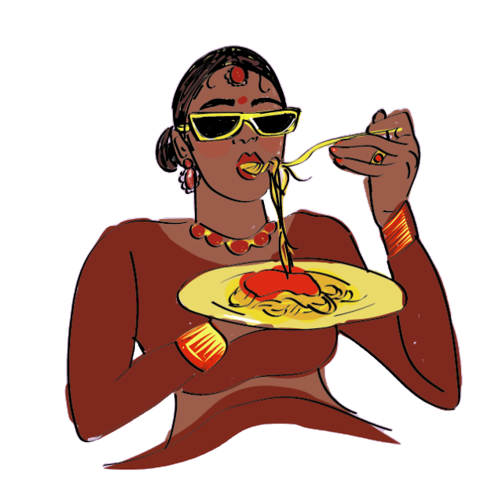
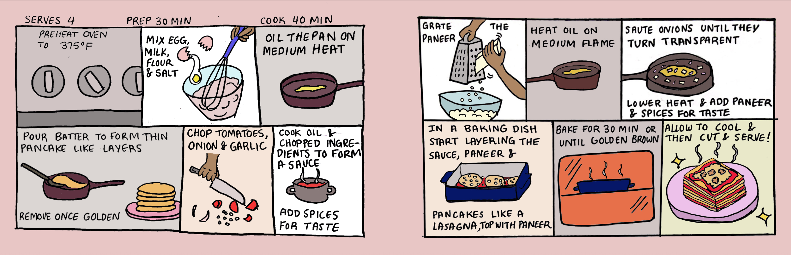

A cookbook about growing up between cultures.
Spice Life isn’t just a cookbook.
It’s a collection of memories, illustrated.

Capturing the stories behind the food.
I grew up in a family of ten where recipes weren’t written down they were passed down through 'watching' and 'doing.'
Spice Life began as a way to preserve those memories, the way my mom layered spices without measuring, the way she taught me to taste and make adjustments, and the small rituals that made each dish feel like home.
Recipes told like memories.

I chose the comic format intentionally.
Memories don’t unfold in bullet points, they move in scenes. The illustrations let each recipe feel like a lived moment, not an instruction sheet.
The comic panels mimic pacing, hand lettering echoes conversation, and soft colors carry warmth.
A visual reflection of my childhood.

Growing up in an immigrant household meant living in between cultures. Weeknight dinners became blended traditions like paneer layered into lasagna.
My book mirrors that fusion of flavors with contemporary storytelling.
“Spice Life is less about recipes and more about remembering where they came from”